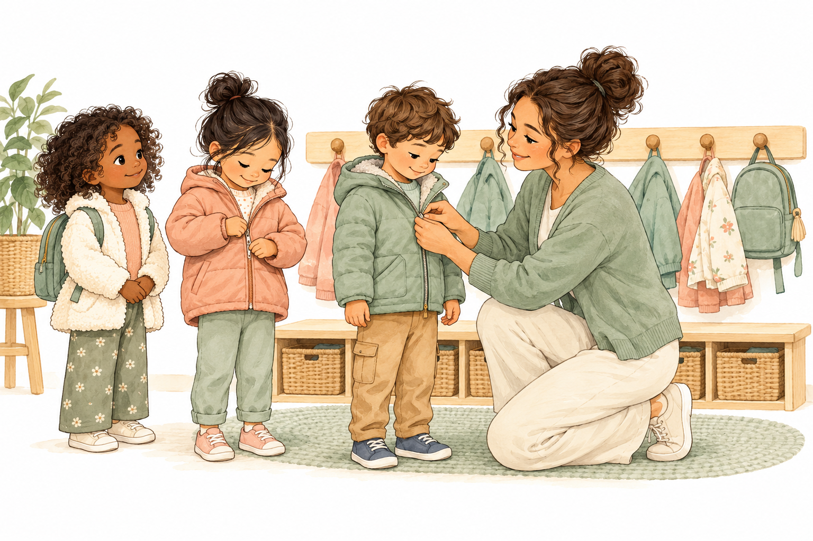
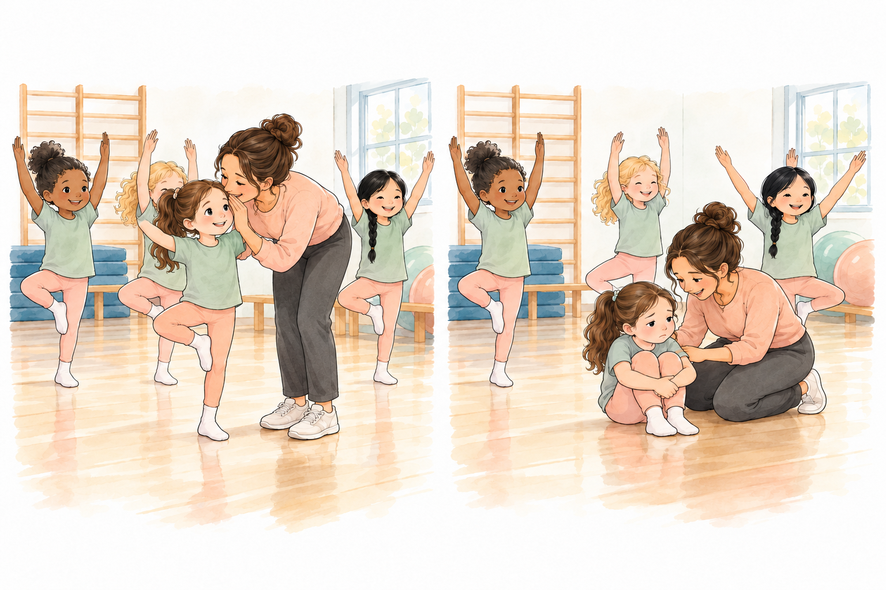
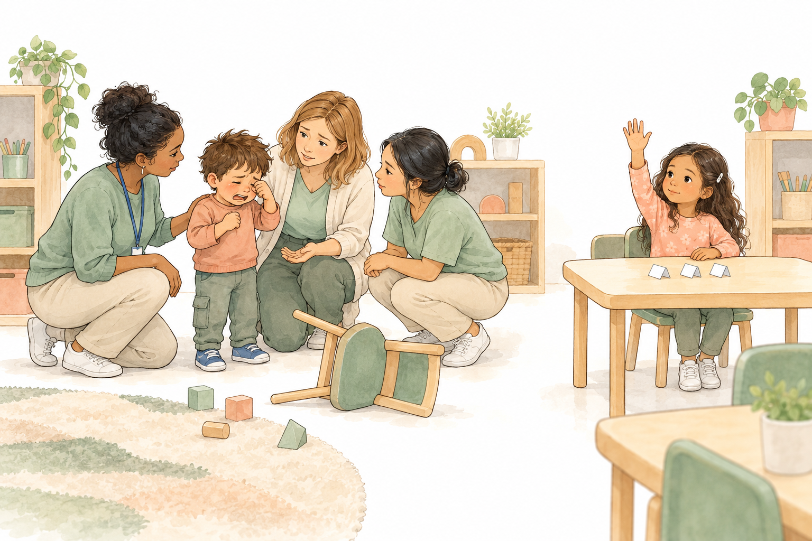
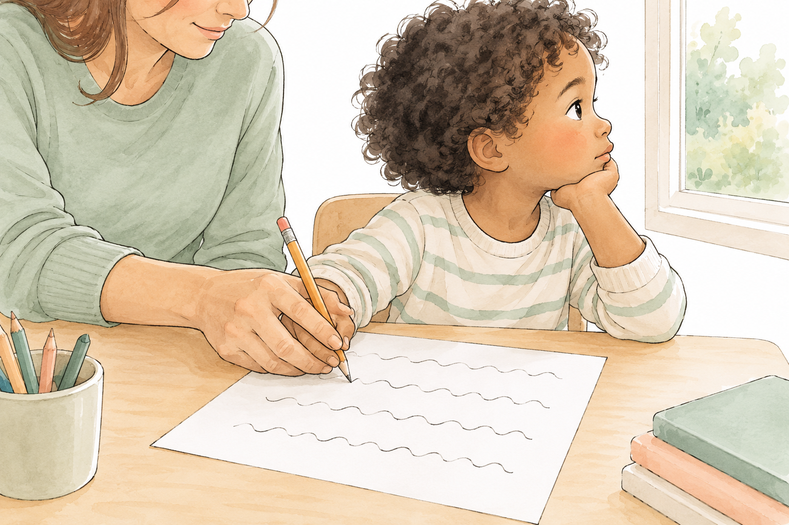
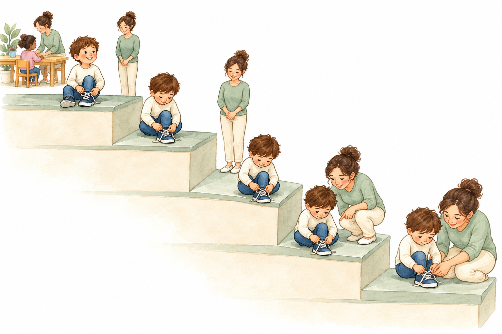
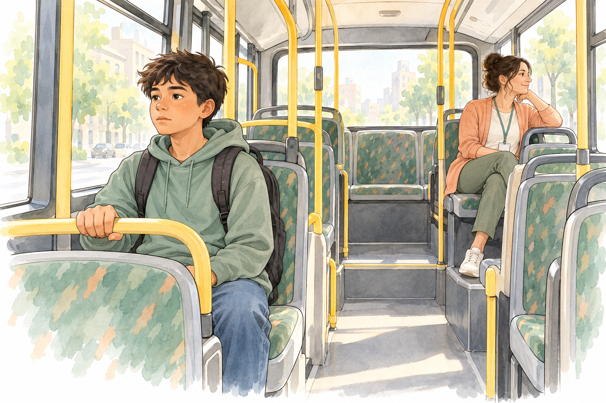
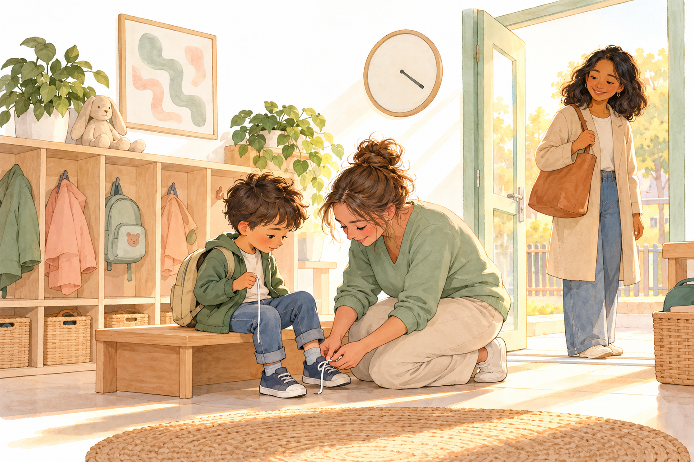

1 / 23 · 2 דקות · פתיחה · גשר מסוף ״CBT בכיתה״
מדרגות לעצמאות
מה הילד לומד מהתגובות שלנו, ומההצלחות שלו
בסוף המפגש הקודם כל אחת בחרה פעולה אחת לנסות בכיתה. סיימנו ברצף של תפקיד התומכת:
היום נשאל שאלה אחת: מה הילד לומד מהתגובות שלנו, ומההצלחות שלו?

- מקשיבות לתלמיד ולמורה
- רושמות מה ראינו ושמענו
- מסכמות מה נלמד ואיך נעזור
- עוזרות לתרגל ונותנות משוב
- בודקות מה השתנה
- משנות את העזרה עם הצוות
2 / 23 · 6 דקות · פתיחה · עבודה בזוגות
מה ניסיתן מאז?
ספרי לבת הזוג על פעולה אחת שניסית מאז המפגש הקודם, או שהיית רוצה לנסות.
התמקדו בשאלה אחת: מה קרה מיד אחרי? מי הגיבה, ואיך?
מה קרה מיד אחרי שהילד עשה את מה שרציתן, ומה קרה אחרי שלא עשה?
סגירת הדיון
לרוב אנחנו זוכרות היטב מה קרה כשהילד לא עשה את מה שביקשנו, וזוכרות פחות מה קרה כשכן עשה. היום נתבונן ברגע שאחרי, כי ממנו הילד לומד.
3 / 23 · 2 דקות · פתיחה · מפת הגשר
שלושה חוטים מהמפגש הקודם להיום
בסוף ״CBT בכיתה״ נגענו בשלושה רעיונות. היום נראה איך הם נראים בפועל, ומה החלק של התומכת בכל אחד מהם.
צעדים קטנים
הילדה מהגן שהתחילה מצליל, ואחר כך מילה ומשפט (שקופית 37). היום: המדרגות של יובל.
תשומת לב לפעולה הרצויה
לא מתעלמים מהילד עצמו, וכשיש סכנה או מצוקה מגיבים (שקופית 39). היום: דבורה בשיעור התעמלות.
בודקים מה השתנה
פעולה אחת, ובדיקה אם היא מועילה (שקופית 43). היום: סימון ✓/✗ כל 5 דקות.
מה לא נעשה לבד
חשיפה הדרגתית לפחד נעשית רק לפי תוכנית של איש מקצוע (שקופית 38). התומכת שותפה בתוכנית, ואינה מובילה אותה.
4 / 23 · 10 דקות · קטע א · לאן הולכת תשומת הלב שלי
דבורה בשיעור התעמלות
דבורה בת 6. בשיעור התעמלות הילדות מבצעות כ־25 תרגילים: עומדות, קופצות, מרימות יד ועומדות על רגל אחת.
דבורה משתתפת רק לעיתים רחוקות. ברוב השיעור היא יושבת על הרצפה, והחברות שלה מתאמנות. בינתיים לא נגלה מה עשתה המורה.

בסבב הראשון, מה דבורה למדה על הדרך להביא אליה מבוגרת?
סגירת הדיון
כשהמבוגרת ניגשת בעיקר כשהילדה יושבת, הישיבה היא הדרך הבטוחה לקבל תשומת לב. זה לא תכנון של הילדה, ולא ״מניפולציה״. כך לומדים כולנו.
5 / 23 · 7 דקות · קטע א · לאן הולכת תשומת הלב שלי
מה המורה של דבורה שינתה?
המורה חיכתה לרגעים המעטים שבהם דבורה השתתפה. אז ניגשה אליה באמצע התרגיל ולחשה לה מילות עידוד.
כשדבורה ישבה על הרצפה, המורה לא דיברה איתה. לפי הספר, ההשתתפות עלתה מ־40% בתחילת התוכנית לכמעט 70% אחרי חמישה ימים, והמשיכה לעלות.
לפי הספר, ההצלחה נבעה משינוי בגישה של המורה. דבורה לא קיבלה פרס או נקודות, רק תשומת לב ברגע הנכון.
מה בדיוק המורה שינתה, ומה לא השתנה בדבורה עצמה?
סגירת הדיון
השתנה התזמון של תשומת הלב, לא הילדה. דבורה לא קיבלה הסבר נוסף או פרס. המבוגרת העבירה את תשומת הלב שלה מהישיבה אל ההשתתפות.
6 / 23 · 8 דקות · קטע א · מושג חדש
תשומת הלב שלנו מלמדת
ילדים חוזרים על מה שמביא אליהם מבוגרת. לכן נותנים את רוב תשומת הלב כשהילד עושה את מה שרוצים, ואומרים לו בדיוק מה ראינו: ״ראיתי שהתחלת.״
כשהתנהגות שקיבלה תשומת לב מפסיקה לקבל אותה, היא לרוב מתגברת לזמן קצר, ורק אחר כך נחלשת. לזה נקרא ״התפרצות לפני דעיכה״. זה לא סימן שהתוכנית נכשלה.
הגבול נשאר כמו שסיכמנו במפגש הקודם: סכנה, כאב, מצוקה ובקשת עזרה מקבלים תמיד מענה. ההחלטה לא להגיב להתנהגות מסוימת מתקבלת רק בתיאום עם המורה.

מגיבים מיד
סכנה, כאב, מצוקה, בקשת עזרה
מפנים את תשומת הלב לפעולה הרצויה
ניגשים כשהילד עושה, ואומרים מה ראינו
קודם מתאמים עם המורה
כשלא ברור, או כשמדובר בהחלטה לא להגיב
אם הילד צועק יותר ביום השני, האם זה סימן שהתוכנית נכשלה?
סגירת הדיון
לא בהכרח. התגברות קצרה היא תופעה מוכרת, והיא חולפת כשנשארים עקביים. אבל אם יש סכנה או מצוקה מגיבים מיד, ואם ההתגברות נמשכת, חוזרים לדבר עם המורה.
7 / 23 · 10 דקות · קטע א · כלי
בודקות בלי להפסיק לעבוד: ✓/✗ כל 5 דקות
כל 5 דקות מסתכלות על הילד לשנייה אחת ומסמנות: האם הוא עושה עכשיו את מה שרצינו? ✓ או ✗. בסוף השיעור סופרים ומחשבים אחוז.
בודקות גם את עצמנו: למה הגבתי בפעם האחרונה, לפעולה הרצויה או לקושי?
| שעה | משתתף עכשיו? | למה הגבתי? |
|---|---|---|
| 10:00 | ✓ | לפעולה הרצויה |
| 10:05 | ✗ | לקושי |
| 10:10 | ✓ | לא הגבתי |
| 10:15 | ✓ | לפעולה הרצויה |
איך תסמני ✓/✗ בלי להפסיק לעבוד, ומה הסימונים לא יספרו לך?
סגירת הדיון
הסימון לוקח שנייה, ואפשר לבדוק רק שיעור אחד ביום. הסימונים מראים מגמה, אבל לא מסבירים למה. את ה״למה״ מבררים בשיחה עם הילד ועם המורה.
8 / 23 · 10 דקות · קטע ב · מה ילד לומד כשעושים בשבילו
יובל, חלק ראשון: מי בסיפור?
יובל, נער בן 14 עם מוגבלות שכלית קלה, למד בכיתת חינוך מיוחד. הוא היה תלוי לגמרי באמו ולא יצא לשום מקום בלעדיה. היא בחרה בשבילו בגדים, צחצחה לו שיניים ושרכה לו נעליים. כמה אנשי טיפול ניסו לעזור לו מגיל שש, אבל כמעט לא נראתה התקדמות בעצמאות שלו.
יועצת בית הספר החליטה לעבוד איתו ועם אמו. היא קבעה יחד עם יובל שתי מטרות ברורות: ללכת ברחוב בלי מבוגר, ולקנות לבד בסופר. את המטרה השנייה בחר יובל בעצמו. הוא רצה מאוד ללכת בהפסקה לקנות באגט, אבל הפחד עצר אותו.
היועצת דיברה עם המורים, עם הפסיכולוג שיובל הלך אליו אחר הצהריים, עם המדריך שלו בצופים ועם ההורים. בימים שבהם הצליח, האם קנתה לו משהו קטן שהוא אוהב, כסימן שגם היא מאמינה בו.
למה המטרה שיובל בחר בעצמו חשובה יותר מכל מטרה שאנחנו נבחר בשבילו?
סגירת הדיון
כשהמטרה שלו, ההצלחה שייכת לו, והמוטיבציה מגיעה ממנו. לפי הספר, מטרות ברורות שאפשר לראות עזרו יותר מהמטרה הכללית ״להיות עצמאי״.
9 / 23 · 10 דקות · קטע ב · מושג חדש
מה הילד לומד על עצמו?
ילד שחווה שוב ושוב שמישהו אחר עושה בשבילו, או שמה שהוא עושה לא משנה, עלול להפסיק לנסות, גם כשהוא כבר יכול. לזה קוראים ״חוסר אונים נלמד״. זה הסבר אפשרי, לא אבחנה.
הצד השני הוא חוויית הצלחה. האמונה ״אני מסוגל״ נבנית בעיקר מהצלחות שהילד עשה בעצמו ושמישהו ראה. מדרגה קטנה שמצליחים בה עדיפה על מטרה גדולה שנכשלים בה.

א. ״תן, אני כבר אסגור לך את התיק. אנחנו מאחרים.״
הילד לומד ש...
ב. ״אני אחזיק את הדף, ואתה תגזור עד הקו.״
הילד לומד ש...
ג. התומכת מחכה חצי דקה ואומרת: ״ראיתי שפתחת את הרוכסן לבד.״
הילד לומד ש...
ד. ״זה קשה לך, עזוב. אני אכתוב ואתה תעתיק.״
הילד לומד ש...
כשהאמא של יובל צחצחה לו שיניים ושרכה לו נעליים, מה הוא למד על עצמו? ומה היא למדה עליו?
סגירת הדיון
ייתכן שהוא למד ״אני לא מסוגל״ או ״מישהו תמיד יעשה בשבילי״, והיא למדה ״הוא לא יכול״. כך זה ממשיך. כל הצלחה קטנה שלו משנה את מה ששניהם יודעים עליו.
10 / 23 · 13 דקות · קטע ב · עבודה בקבוצות
בונות סולם ליובל
המטרה של יובל: ללכת לבד בהפסקה ולקנות באגט. לפני שנגלה מה עשתה היועצת, בנו לו סולם של חמש מדרגות.
לפי הספר, כשמתכננים מראש דרישה קטנה, הסיכוי להצליח גדל. את הדרישה מעלים כשהביטחון של הילד מתחזק מההצלחות.

| מדרגה | מה יובל עושה | איפה המבוגרת עומדת |
|---|---|---|
| 5 | לא נדרשת | |
| 4 | מחכה ביעד | |
| 3 | רחוקה | |
| 2 | לידו | |
| 1 | צמודה |
איזו מדרגה בסולם שלכן היא הכי גבוהה, ואיך תדעו שהגיע הזמן לעלות אליה?
סגירת הדיון
עולים מדרגה כשההצלחה חוזרת כמה פעמים, למשל שלוש פעמים ✓. אם המדרגה גדולה מדי, מוסיפים מדרגה באמצע. המבוגרת מתרחקת בהדרגה, והילד עושה יותר בעצמו.
11 / 23 · 7 דקות · קטע ב · מליאה
מציגות סולם, ויוצאות להפסקה
שתי קבוצות מציגות את הסולם שלהן, דקה וחצי לכל קבוצה.
שאלה להפסקה: מה תעשו כשיובל קם אחרי שתי שניות ורץ אליכן?
הפסקה · 15 דקות · חוזרות בזמן עם התשובה בראש.
מה תעשו כשיובל קם אחרי שתי שניות ורץ אליכן?
סגירת הדיון
נחזור לשאלה מיד אחרי ההפסקה, ונראה מה עשתה היועצת.
12 / 23 · 7 דקות · קטע ג · הצלחות קטנות ומשוב
יובל, חלק שני: שניות לבד באוטובוס
בשבוע השלישי התחילו לתרגל נסיעה באוטובוס. היועצת התאימה את הקצב ליובל: כשיעד היה קשה מדי, הוא אמר עד לאן הוא יכול להגיע לבד. הם התפשרו, אבל היא שמרה על ״קצת לחץ״ להתקדם.
בהתחלה, אחרי כמה שניות לבד, יובל קם, רץ אליה והתיישב לידה. היועצת ציינה ושיבחה את השניות שבהן ישב לבד. במילים שלה: ״הפכתי כישלון לניצחון.״

נסיעה ראשונה
יובל יושב ליד היועצת.
נסיעה שנייה
יובל יושב במושב אחד מאחוריה. בכל נסיעה הוא מתרחק עוד קצת.
סוף השבוע השלישי
יובל יושב בתחילת האוטובוס, והיא בסופו. הוא לא מסתכל לאחור.
השבוע החמישי
בהסכמתו, היועצת נוסעת לפניו לתחנה המרכזית ומחכה שם. נערה מבית הספר שיובל מכיר מוודאת שהוא עולה לבד.
איך כמה שניות לבד הפכו מ״כישלון״ ל״ניצחון״, ולמי?
סגירת הדיון
היועצת בחרה לראות את מה שכבר הצליח, ותיארה אותו בדיוק. יובל שמע שהוא כבר יכול לשבת לבד, גם אם רק לכמה שניות. הניצחון היה קודם כול שלו.
13 / 23 · 4 דקות · קטע ג · רגע לעצמנו
גאים במה שכבר הושג וסבלניים כלפי מה שעוד לא
״גאים במה שכבר הושג וסבלניים כלפי מה שעוד לא.״
על מה קל לכן להיות גאות, ועל מה הכי קשה לכן להיות סבלניות?
סגירת הדיון
קל להיות גאות בהצלחה גדולה, וקשה להיות סבלניות כשאותו קושי חוזר. בסרטון הבא נשמע איך משוב יכול לעזור לילד להמשיך לנסות.
14 / 23 · 5 דקות · קטע ג · סרטון
לשבח את הדרך, לא את הכישרון
נצפה בקטע קצר: מה קורה כשמשבחים ילד על המאמץ, על הדרך שבחר ועל ההתקדמות שלו, ולא על כמה שהוא ״חכם״?
The power of believing that you can improve · TED
מה ההבדל בין ״כל הכבוד, את חכמה״ לבין ״ישבת לבד חצי דקה״? על איזה משפט ילד יכול לחזור מחר?
סגירת הדיון
״גאים במה שכבר הושג וסבלניים כלפי מה שעוד לא.״ משוב שמתאר מה הילד עשה מראה לו מה כבר הושג, ומשאיר מקום למה שעוד לא.
15 / 23 · 12 דקות · קטע ג · משוב
חצי הכוס המלאה: משוב שמתאר מה הילד עשה
לפי הספר, כשילד מנסה ומצליח רק בחלק, מחזקים את מה שהצליח, בלי להזכיר את מה שלא. מתארים את ההישג במילים של פעולה (״ישבת לבד עד התחנה״), ולא רק ״השתדלת״. ילדים רוצים לראות הצלחה.
ועוד עיקרון מהספר: ״מתח מתון ותמידי״. לא לחץ חזק מדי, שמזמין כישלון, וגם לא דריכה במקום, שמתסכלת את הילד.
Austin's Butterfly · Tali Lerner (העלאה עם כתוביות בעברית)
״כל הכבוד!״
ניסוח מחדש: ...
״יופי שניסית.״
ניסוח מחדש: ...
״אתה חכם!״
ניסוח מחדש: ...
״את ילדה טובה.״
ניסוח מחדש: ...
״השתדלת היום.״
ניסוח מחדש: ...
״וואו, מושלם!״
ניסוח מחדש: ...
מתי ״כל הכבוד״ לא מלמד את הילד כלום?
סגירת הדיון
כשהילד לא יודע על מה קיבל אותו. ״כל הכבוד״ שבא אחרי תיאור (״כתבת את כל השם לבד״) מלמד הרבה יותר. אוסטין שיפר את הציור כי כל משוב אמר לו בדיוק מה לעשות עכשיו, ואף אחד לא צייר במקומו.
16 / 23 · 8 דקות · קטע ג · מושג חדש
מומנטום של הצלחות
אחרי שתיים־שלוש בקשות קלות שהילד מצליח בהן מהר, קל לו יותר להתחיל גם בבקשה קשה.
גבולות: זה לא תרגיל כדי להכריח. זה לא מתאים כשהילד מפחד באמת, וסירוב הוא מידע שמעבירים למורה.
- ״תן לי כיף.״
- ״תעביר לי את הדף.״
- ״תרים את העיפרון.״
- ״עכשיו תכתוב את השם שלך.״
מה ההבדל בין מומנטום של הצלחות לבין מניפולציה?
סגירת הדיון
מומנטום עוזר להתחיל משימה רגילה, כשהילד יכול לעשות אותה. מניפולציה מנסה לעקוף ״לא״ אמיתי, פחד או כאב. כשהילד מסרב שוב ושוב, עוצרים ומבררים.
17 / 23 · 5 דקות · קטע ג · מקרה לדוגמה
מקרה גבול: עומר חוזר אחורה
עומר בן 9. המטרה שסוכמה עם המורה: להתחיל לבד משימת כתיבה. בשבועיים האחרונים הוא עלה שתי מדרגות. קודם התחיל לבד כשהתומכת ישבה לידו, ואחר כך כשהיא עמדה בצד השני של הכיתה.
ביום ראשון, אחרי סוף שבוע קשה בבית (כך סיפרה המורה), עומר מניח את הראש על השולחן ואומר: ״תשבי לידי, אחרת אני לא עושה כלום.״
איך יורדים מדרגה בלי שהילד ירגיש שנכשל?
סגירת הדיון
יורדים חצי מדרגה כדי לחזור להצלחה, ושומרים על מה שכבר הצליח: ״אשב לידך עד שתכתוב את השורה הראשונה.״ נסיגה אחרי יום קשה אינה סוף התוכנית. אם זה חוזר, או אם נראית מצוקה, מדברים עם המורה.
18 / 23 · 5 דקות · קטע ג · כשהילד כבר לא צריך אותי
הסוף של יובל: הוא ״סידר״ אותה
אחרי השבוע החמישי גם האם התחילה לתרגל עם יובל. הוא התחיל ללכת לבד לצופים, והמדריך חיכה לו בתחנה.
כמה ימים אחר כך הוא היה צריך לנסוע מבית הספר לפסיכולוג. הוא ידע שהיועצת מתכוונת לעקוב אחריו ולוודא שהוא עולה בשלום. הוא ״ברח״ לה, עלה לאוטובוס והגיע לבד. בשמחה הוא סיפר איך ״סידר״ אותה.
מאז הוא נוסע לבד פעמיים בשבוע: לפסיכולוג, לצופים והביתה. לפי הספר, הוא התחיל להתנהג בבגרות רבה יותר גם בכיתה, ובבית ביקש לעשות דברים לבד, והאם אפשרה לו.
סרטון רשות: Piper (טריילר, 1:36, בלי דיבור)
Piper (טריילר) · Disney UK
האם הצלחה של הילד יכולה להרגיש לנו כמו הפסד? מה עושים עם זה?
סגירת הדיון
זה טבעי להרגיש קצת ריקות כשהילד מסתדר בלעדינו. ההצלחה שלו היא גם הצלחה מקצועית שלנו. אפשר לבקש מהמורה תפקיד חדש עם אותו ילד, למשל בקשר עם חברים או בתחום אחר.
19 / 23 · 12 דקות · קטע ד · מהסיפור לכיתה שלי
סולם של חמש מדרגות לילד מהעבודה שלכן
בחרו ילד אחד מהעבודה, בלי שם ובלי פרטים מזהים. אפשר גם לבחור מקרה מהבנק.
מלאו בדף הכלי: מטרה במילים של פעולה, חמש מדרגות, איפה את עומדת, משפט ״חצי כוס״ ומתי עולים מדרגה.
| מקרה | תיאור קצר |
|---|---|
| שירה, בת 6, גן | מחכה שהתומכת תלביש לה את המעיל לפני היציאה לחצר. |
| נדב, בן 11, חינוך מיוחד | לא ניגש לבקש דף מהמורה, ושולח את התומכת לבקש בשבילו. |
| ליה, בת 13, כיתה משלבת | לא מתחילה משימה בלי שהתומכת יושבת לידה. |
איזה חלק בסולם הוא שלך, ואיזה לא בידיים שלך?
סגירת הדיון
בידיים שלך: איפה את עומדת, מה את אומרת ומה את מסמנת. לא בידיים שלך: החלטות על יציאה, סיכון, שינוי תוכנית או קשר עם ההורים. אלה עוברים דרך המורה והצוות.
20 / 23 · 7 דקות · קטע ד · סיבוב גלריה
גלריה: לומדות מהסולמות של אחרות
תלו את הדפים על הקיר. כל קבוצה עוברת בין הסולמות ומשאירה פתק אחד על כל סולם:
פתק בצבע אחד: ״מדרגה שנראית לנו גדולה מדי״. פתק בצבע אחר: ״משפט חיזוק שאהבנו״.
מה ראיתן בסולם של קבוצה אחרת שהייתן לוקחות לכיתה שלכן?
סגירת הדיון
לרוב לוקחים משפט חיזוק טוב או מדרגת ביניים שלא חשבנו עליה. פתק של ״מדרגה גדולה מדי״ הוא מתנה, לא ביקורת.
21 / 23 · 6 דקות · קטע ד · תיאום
משפט אחד למורה
״ראיתי ש... אני מציעה לנסות... נבדוק בסימון ✓/✗ במשך שבוע, ונדבר ב...״
לדוגמה: ״ראיתי שליה מתחילה לכתוב רק כשאני לידה. אני מציעה לנסות שבוע שבו אני יושבת לידה רק בדקה הראשונה. נבדוק בסימון ✓/✗, ונדבר ביום חמישי.״
מה המורה צריכה לשמוע כדי להגיד כן?
סגירת הדיון
משהו קצר וברור: מה ראית, מה את מציעה, כמה זמן זה ייקח ומתי תדברו שוב. הצעה לניסוי קצר עם נתון קלה יותר לאשר מתוכנית גדולה.
22 / 23 · 6 דקות · קטע ד · סגירת המעגל
פעולה אחת לשבוע, גרסה 2
בסוף ״CBT בכיתה״ בחרתן פעולה אחת. הפעם הפעולה היא מדרגה אחת ומשפט חיזוק אחד.
כתבו לעצמכן: איזו מדרגה אנסה, מה אגיד כשהיא תצליח בחצי, ומתי אדבר עם המורה.
דף העבודה האישי, ״בעקבות סיפורו של יובל״, הוא להגשה או למפגש הבא.

איזו מדרגה אחת תנסי השבוע, ומה תגידי כשהיא תצליח בחצי?
סגירת הדיון
מדרגה אחת ביום עדיפה על ״הכול או כלום״. גם בימים שאין זמן, אפשר להשאיר לילד חלק אחד לעשות לבד.
23 / 23 · 3 דקות · סיום
עצמאות נבנית מהצלחות קטנות שמישהו ראה
לאן הולכת תשומת הלב שלי · איזו מדרגה הילד עושה לבד · מה אני אומרת כשהוא מצליח, גם בחצי.